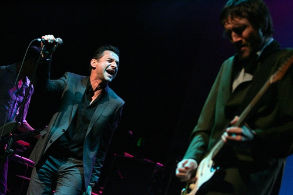
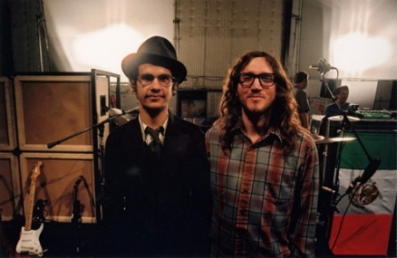
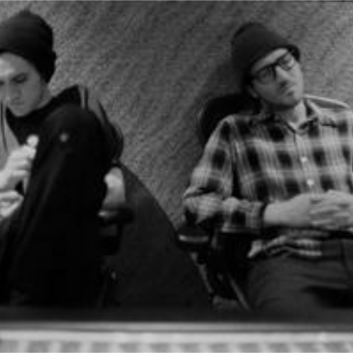
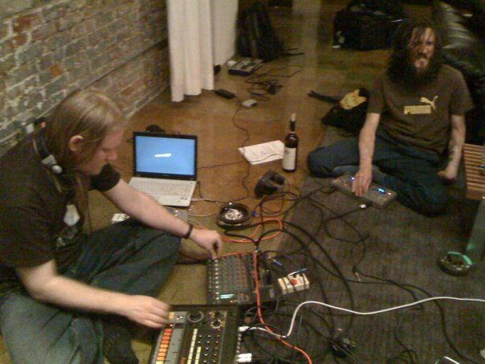

John Frusciante to niezwykle kreatywny muzyk, angażuje się w coraz to nowe projekty przez co w swojej twórczości nie zamknął się w obrębie jednego stylu.

W ciągu całej swojej kariery realizował projekty z wieloma inspirującymi artystami, współpracował z wieloma muzykami i zespołami, a także chętnie brał udział w sesjach nagraniowych różnych grup muzycznych oraz zajmował się produkcją płyt. Występując z muzykami tworzącymi w różnych stylistykach pokazał jak wszechstronnym jest artystą.
Przeglądając listę artystów, z którymi współpracował znajdujemy mnóstwo nazwisk  reprezentujących różne środowiska muzyczne. Rozpoczynając od klasyków jak Macy Gray ( „The ID” – 2001 r.), Johnny Cash („American IV: The Man Comes Around” – 2002 r.), David Bowie (soundtrack do filmu „Underworld” – 2003 r.), przez artystów takich jak Perry Farrell z Jane’s Addiction ( „Rev” – 1999 r., na której można usłyszeć jego duet z Tomem Morello z Rage Aganist The Machine, „Ultra Payloaded” – 2007 r.), Dave Gahan („Hourglass” – 2007 r.). Jego charakterystyczną gitarę możemy usłyszeć w nagraniach artystów jakże odmiennych muzycznie jak Tricky („Blowback” – 2001 r.) czy Wu-Tang Clan („8 Diagrams”–2007r.)
reprezentujących różne środowiska muzyczne. Rozpoczynając od klasyków jak Macy Gray ( „The ID” – 2001 r.), Johnny Cash („American IV: The Man Comes Around” – 2002 r.), David Bowie (soundtrack do filmu „Underworld” – 2003 r.), przez artystów takich jak Perry Farrell z Jane’s Addiction ( „Rev” – 1999 r., na której można usłyszeć jego duet z Tomem Morello z Rage Aganist The Machine, „Ultra Payloaded” – 2007 r.), Dave Gahan („Hourglass” – 2007 r.). Jego charakterystyczną gitarę możemy usłyszeć w nagraniach artystów jakże odmiennych muzycznie jak Tricky („Blowback” – 2001 r.) czy Wu-Tang Clan („8 Diagrams”–2007r.)
Wieloletnia przyjaźń Johna Frusciante z Omarem Rodriguez’em – Lopez’em zaowocowała jego gościnnym udziałem na niemal wszystkich płytach zespołu The Mars Volta („De-Loused in the Comatorium” – 2003 r., „Frances the Mute” – 2005 r., „Amputechture” – 2006 r., „The Bedlam in Goliath” – 2008 r. i „Octahedron” – 2009 r.), a także wydaniem w ostatnim czasie dwóch albumów „Omar Rodriguez Lopez & John Frusciante” i „Sepulcros de Miel” zawierających utwory instrumentalne muzyki improwizowanej i rocka progresywnego. 
Artyści udostępnili je do pobrania za darmo, od dobrej woli fanów zależy czy wpłacą dowolną kwotę, której dochód zostanie przekazany na konto pozarządowej organizacji „Keep Music In Schools”. John wspierał także Omara na jego płytach solowych („A Manual Dexterity: Soundtrack Volume One” – 2004 r., „Se Dice Bisonte, No Bùfalo” – 2007 r. i „Calibration (Is Pushing Luck and Key Too Far” – 2007 r.)

Josh Klinghoffer to również bliski współpracownik Frusciante.
Przyjaźń tych dwóch muzyków
jest kontynuowana od lat i wspólnie stworzyli wiele nagrań, m.in. płyta „A Sphere in the Heart of Silence” (2004 r.), a wraz z Joe Lally’m, basistą zespołu Fugazi stworzyli projekt pod nazwą
Ataxia.
Z nagrań tej grupy wydane zostały dwa albumy „Automatic Writing” (2004 r.) i „AW II” (2007 r.).
Utwory Frusciante pojawiają się także na ścieżkach dźwiękowych, m.in. do filmu „Brown Bunny” w reżyserii jego przyjaciela Vincenta Gallo, którego wspierał również przy jego projektach muzycznych. Muzykę Frusciante usłyszymy w amerykańskim serialu „24 godziny”, skomponował także muzykę do dokumentalnego filmu „Little Joe”, opowiadającego o życiu aktora Joe Dallesandro. Bardzo często współpracuje z młodymi artystami pomagając im uzyskać odpowiednie brzmienie.
Po wydaniu w 2009 roku albumu “Empyrean” Frusciante współpracował z grupą Swahili Blonde („Man Meat” – 2010 r., „Psycho Tropical Ballet Pink” – 2011 r.) oraz wziął udział w eksperymentalnym projekcie Speed Dealer Moms. Udział w nagraniach tej grupy, którą tworzyli John Frusciante, Aaron Funk i Chris McDonald, był efektem jego zafascynowania elektronicznym brzmieniem. Speed Dealer Moms w 2010 r. wydała swoje nagrania w postaci dwóch kompozycji na EPce.
Frusciante ma również doświadczenie w zakresie produkcji muzyki i inżynierii dźwięku, co wykorzystywał podczas prac przy swoich albumach solowych, projektach w których brał udział oraz zostając producentem płyt innych zespołów. Gitarzysta zaznaczył swój udział przy produkcji albumu „You Come And Go Like a Pop Song” zespołu The Bicycle Thief, oraz debiutanckiej EPki „Exquisite Corpse” grupy Warpaint.
John Frusciante współtworzył rozwiązane już projekty The Three Amoebas oraz Omar Omar Omar i występował gościnnie na wielu albumach różnorodnych gatunkowo i stylistycznie artystów, których ilości nie sposób wymienić, bo lista ta jest bardzo długa, ale warto tu jeszcze wspomieć o RZA, George Clinton, Glenn Hughes, N.A.S.A, Kristen Vigard, Banyan, Fishbone, Ziggy Marley, czy ostatnio Catherine Ringer.
